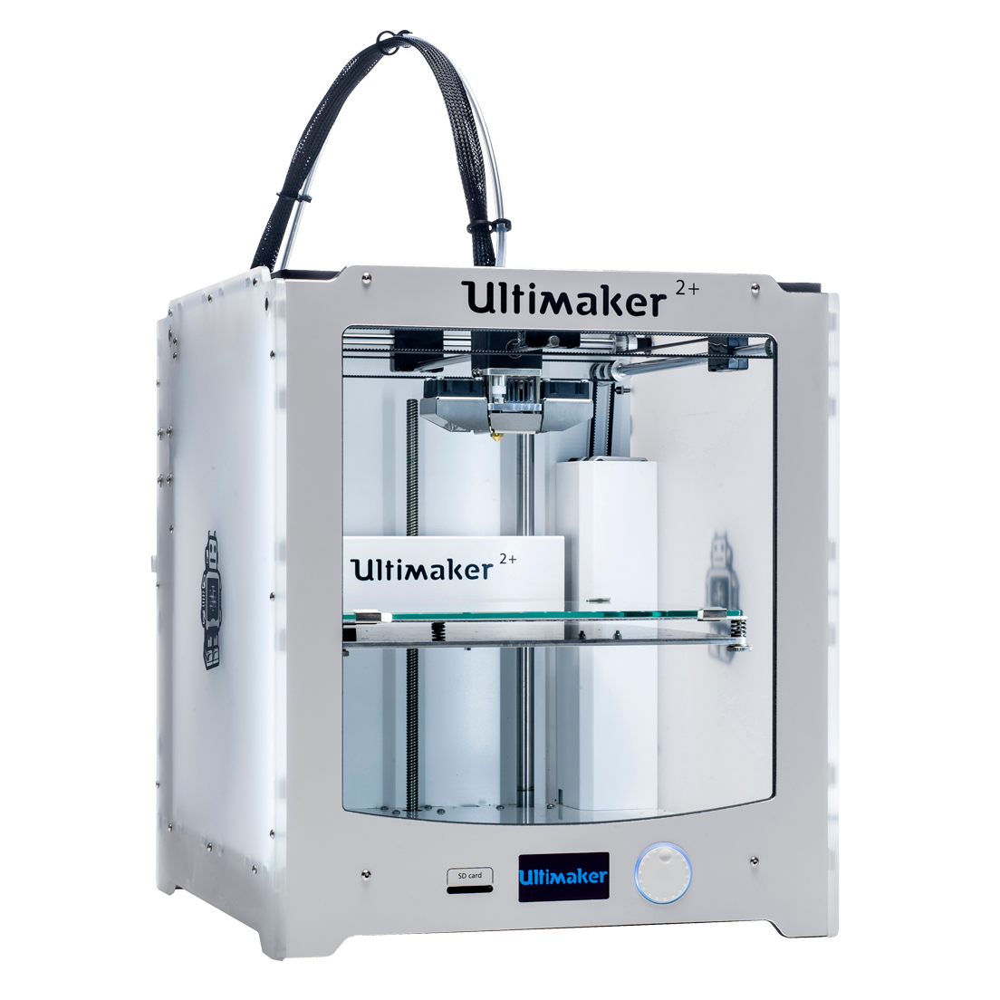
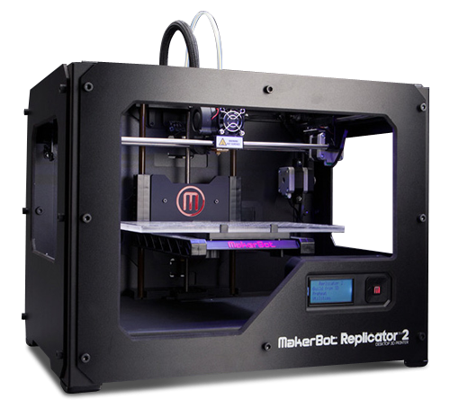
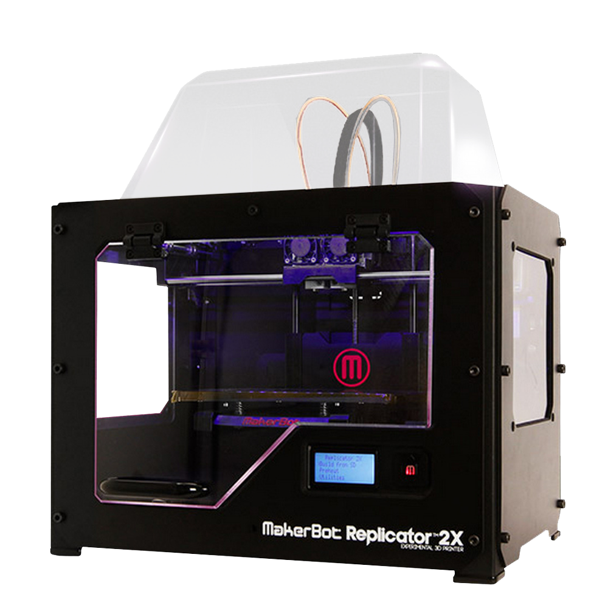
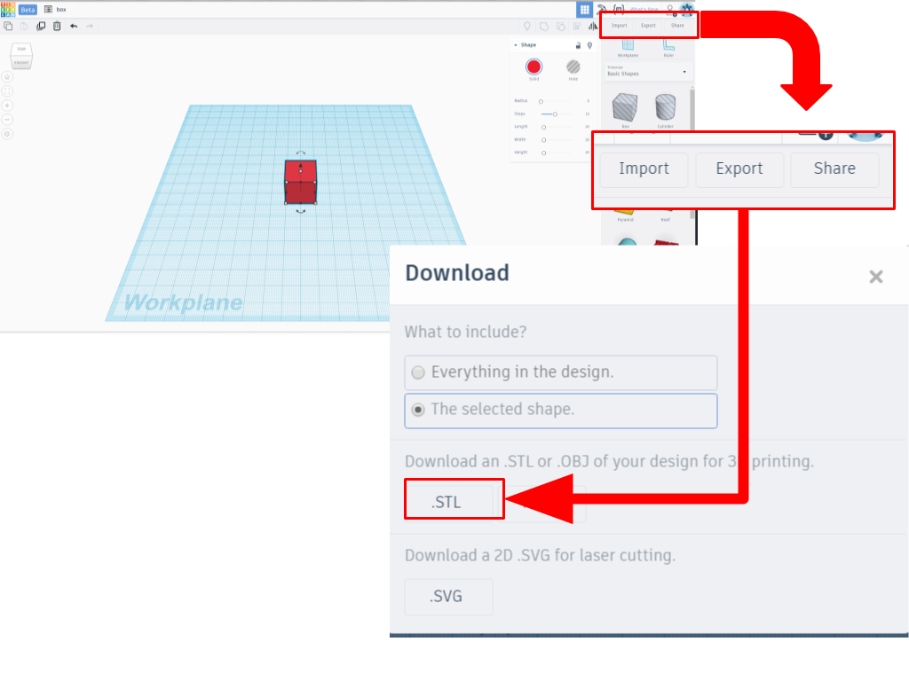
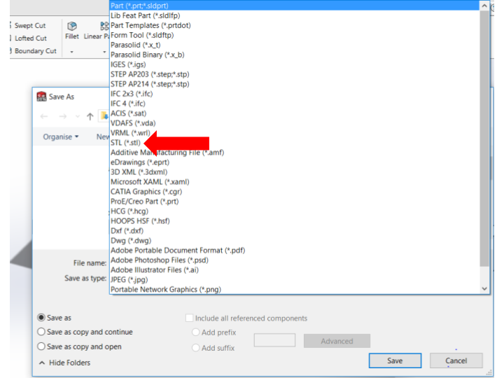
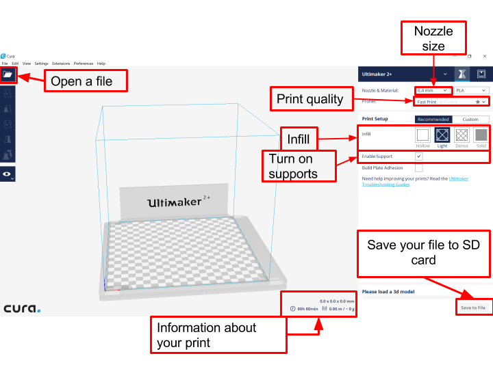
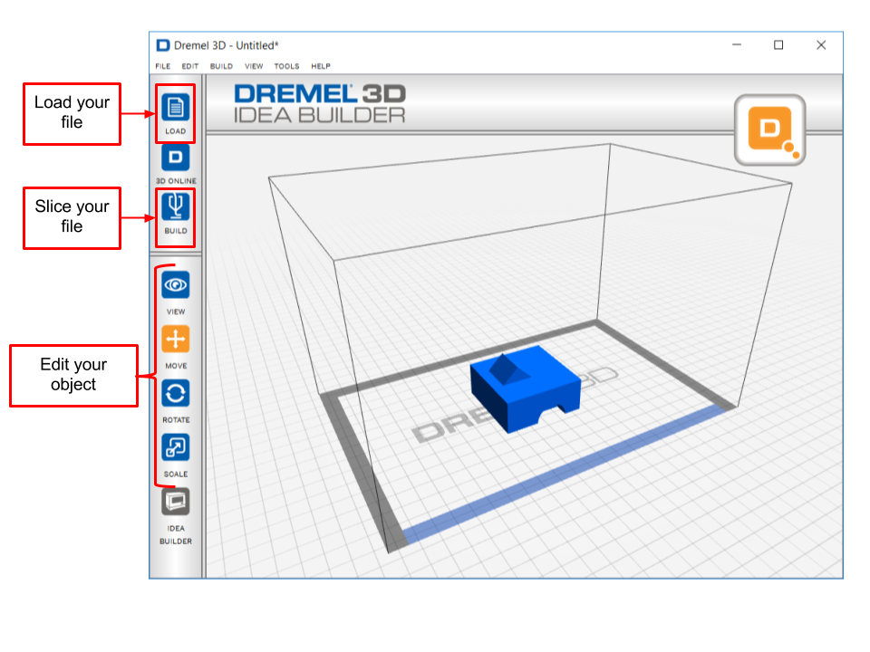
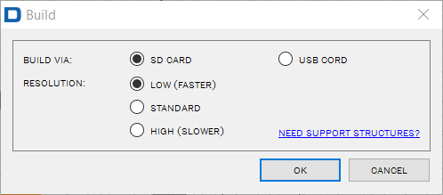
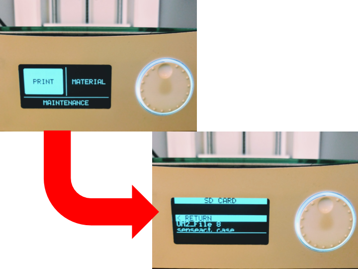
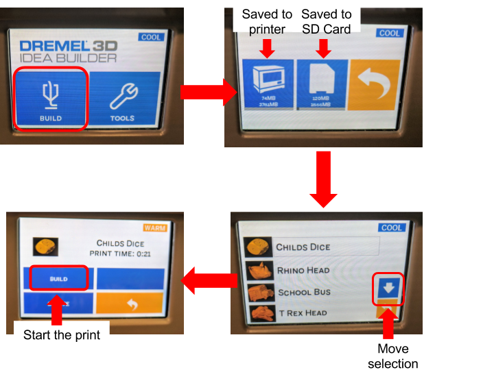

3D Printing Guide
What is 3D printing
3D printing is an additive manufacturing process which creates a three-dimensional object from a digital model.There are many different ways to 3D print. At the uOttawa Makerspace, we use FDM (fused deposition modeling) which works by slicing the model into layers and then printing one layer on top of the other. The material that we use is a type of plastic known as PLA (Polylactic acid). This
The material that we use is a type of plastic known as PLA (Polylactic acid). This plastic is special because of the temperature at a specific temperature, it melts and cools down at known ranges that are easy to work with.
Which 3D printers do we have?
| Ultimaker 2+  |
Dimensions
Layer Thickenss
Supported Filament
Special Feature
|
|
|---|---|---|
| Repicator 2  |
Dimensions
Layer Precision
Supported Filament
|
|
| Replicator 2x  |
Dimensions
Layer precision
Supported Filament
Special Feature
|
|
Dremel
|
Dimensions
Layer Thickenss
Supported Filament
|
|
Comparing Printers
There is a triangle of priorities to consider when selecting which 3D printer. Click "More +" to see more details on each 3D printer.

How do I 3D print at the makerspace?
At the makerspace we have several different types (brands) of printers. When printing you will encounter either the Ultimaker, Makerbot, or Dremel. In general, the processes are similar.
- Create/find a 3D model
- Save or download the model as an .stl
- Open model in a slicer
- Send the code on the 3D printer
- Start the print
1. Create a 3D model
There are many ways to create or find a 3D model. If you want to browse through a library, Thingiverse or Youmagine. These sites are a great way to inspire yourself. If you are more of a do it yourself type of person there are several programs you can try.
If you are a beginner, try Tinkercad. This is a browser based 3D design application that is very simple to learn. For more information check out this handy guide. If you need something a little more advanced, check out Fusion 360.
2. Save or download the model as an .stl
What is an .stl file? It is a stereolithography file format. This type of file uses a web of polygons to describe a 3D object. It is this easiest and the default file type with most of 3D printing software.
In Tinkercad, click on Export a new window will pop up and then select .STL

In Solidworks, click File-> Save as. A new window will appear. Choose the file type .stl.

3. Open Model in a slicer
Your .stl file contains a set of triangles in 3D space. If you send this to a 3D printer, it will not know what to do. A slicer “slices” the 3D object into layers and then generates machine code. Different printers work better with different slicers. The slicers need to be downloaded onto your computer. However, all our computers have all the software for each of our printers.
4. Send the code to the printer
The ultimaker = Cura
- Open file in cura
- Select the settings you want for your print. (For more information about printer settings and other things you can do in this porgram click here)
- Save to file. Make sure you are saving to the SD card

Makerbot Replicator = Makerbot desktop
- Open Makerbot desktop
- Click add a file
- Select the right printer. We have both Replicator 2 and Replicator 2x. To do this click on “device” on the top menu. Then “select type of device” which can either be one of the two previously mentioned printers.
- Send your file to the device. There are two ways of doing this, either using an SD card or a usb cable.
- SD Card: Click “Export Print File” Replicators only work with 2Gb SD cards (or smaller), if you try to use anything bigger you will get an “SD card read error”.
- USB Cable: Connect your printer to your computer using a usb cause. You should see the printer at the bottom of the Makerbot Desktop screen. Click Print. Once you have clicked print, you unfortunately cannot unplug the computer.
Dremel = Dremel Idea builder
- Load your .stl file by clicking the load button on the menu on the left hand side. You can modify your object (scale, move, or rotate) using the buttons on the left hand side
- Click build.

- Select your settings and your method of printing. Either using an SD card or a USB cable.

- SD card: You are saving the machine to an SD card and moving the SD card to the printer
- USB cable: You are using a USB wire to transfer the fire to the printer. What is nice with the dremels is the file is downloaded to the machine. Therefore you can unplug the wire when the file has transferred.
5. Start the print
Starting your print is very simple. Simply save your file to an SD card or connect your computer to the printer and click print or build.
Ultimaker
- Save your file to an SD card. Any size SD card will work.
- Walk over to the printer and insert the card into the SD card slot located on the front of the printer.

- Turn on printer. There is an on/off switch located at the left hand side of the ultimaker. This is also a good time to make sure that there is filament loaded into the printer.
- Using the knob, select print. To “select” you simply press on the knob. This will take you to the SD card page, scroll through the files and select yours. Usually the most recent files are found at the bottom of the list. Selecting the
file, should start your print.

Dremel
If you are using a USB cord, the print with start automatically when you hit build in on your computer. Follow the following step if you are using the SD card.
- Place your SD card in the SD card slot in the 3D printing. This is found on the right hand side near the front of the printer.
- If the 3D printer is not already on, turn on the printer using the on/off switch located at the right hand side near the back of the printer.
- Using the front screen, press build ->The picture of an SD card ->select your file -> Build.
